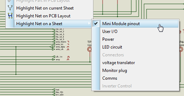
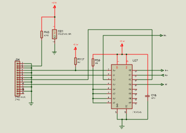
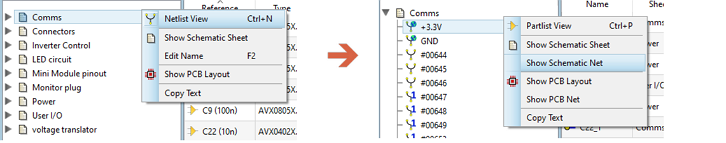
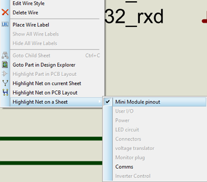
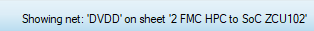

It is often useful to follow a net through the various sheets of the schematic. The design walk feature provides a convenient way to do this using net tagging on the schematic sheets as a visual indicator.
The Design Explorer module by contrast provides a full data driven analysis of net contents and can also be viewed per sheet.
The design walk is started by specifying the net. This is done on schematic by right clicking on a wire, terminal or pin of that net and selecting the 'Highlight net on sheet' option from the context menu.

Highlight net on a Sheet shows both which sheets contain the net and also the current sheet (with a tick).
All of the sheets on the schematic are listed in order with those not containing the net disabled. The checkbox on the left hand side shows the current sheet. Left clicking on a sheet will tag it and navigate the schematic to that sheet.

3.3V net tagged on a sheet.
You can also tag a net on a sheet from the Design Explorer Module. First make sure you are in Netlist Mode and then right click on a net and select the Show Schematic Net option from the context menu.

Selecting a net on a sheet from inside the DXP module.
Once you have the net tagged on one sheet you can cycle the sheets with the page up and page down arrow keys. Navigation on a multi-sheet hierarchical design is down then across.
Use the PgUp and PgDn arrow keys to switch through the sheets.
Alternatively, if you want more control just right click on the wire again and select your next destination sheet from the list.
Let's assume you want to follow a signal on the schematic. In our case, we'll choose an RS232 line. It's very likely that this will be on only one or two of the sheets. The best solution is therefore to use the context menu twice since it shows you on which sheets the signal is present. So:

Use the Sheet states for faster navigation.
The other common use case will be to look at the IC's on the schematic and check that everything is powered. In this case the net will be a power net and is likely to be on most every sheet on the schematic. In this case cycling through the sheets with PGUP/PGDOWN after the initial tag is probably going to be easiest. So:
PGDN
...
Needless to say this is only going to work well if you have visible power pins. If you use hidden power pins then they can't be highlighted because they are hidden ! You should use Design Explorer data view in this situation.
The sheet name is shown on the status bar after you switch to it so you have some idea of where you are on the design hierarchy when cycling through sheets.

It will also tell you if there is no net presence on the sheet. Assuming this is intentional (!) you can then just continue Pgup/Pgdown cycling to the next sheet.